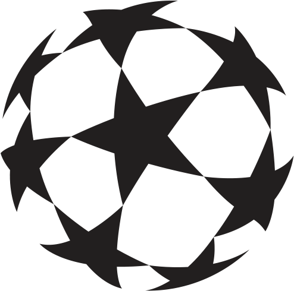
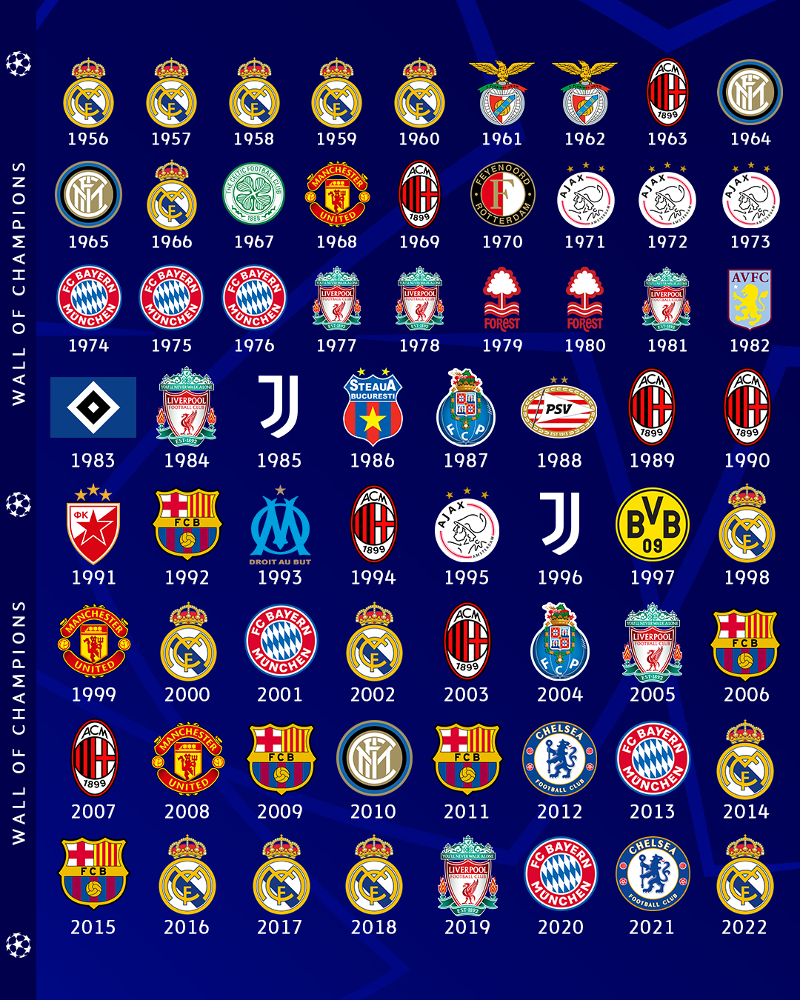
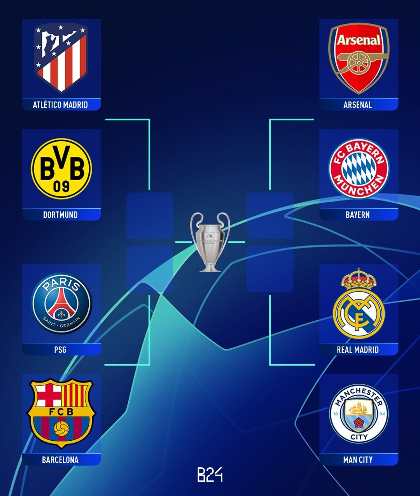

home
classificação
ganhadores
artilheiros
O ganhador da champions 23-24 ainda não foi definido
Arsenal, Bayern, Real Madrid, City, PSG, Barcelona, Atlético Madrid, e Borussia ainda estão na disputa.
Confira abaixo a lista de todos os ultimos ganhadores

Restaram 8 times brigando pelo atual titulo da champions league, o chaveamento ja esta disponivel confira abaixo:

Os confrontos de ida aconteceram nos dias 09/04 e 10/04 e os jogos de volta aconteceram nos dias 16/04 e 17/04